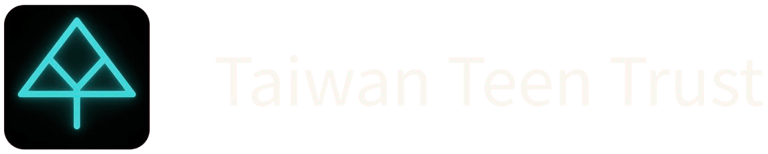

Taiwan Teen Trust 是台灣第一個由青少年完全主導的社會創新組織。我們相信，改變不需要等到長大。 Taiwan Teen Trust is Taiwan's first social innovation organization entirely led by teenagers. We believe change doesn't have to wait until you grow up.
Taiwan Teen Trust 成立於 2020 年，是由一群高中生發起的非營利組織。我們不等待大人的許可，我們自己動手創造改變——從台灣的流浪動物問題到青年政策倡議，每一個專案都是我們對社會的承諾。 Founded in 2020 by a group of high school students, Taiwan Teen Trust is a nonprofit that refuses to wait for adults' permission. We create change ourselves — from Taiwan's stray animal crisis to youth policy advocacy.
認識我們的故事 Our Story →從流浪動物救援到 TNR 政策倡議，推動台灣社會對動物生命的尊重與保護。
From stray animal rescue to TNR policy advocacy, promoting respect and protection for animal lives across Taiwan.
讓青少年的聲音進入政策討論，培養下一代公民參與社會議題的能力與勇氣。
Bringing youth voices into policy discussions and developing the next generation's capacity to engage with social issues.
透過研究、教育與實際行動，守護台灣的自然環境，為下一代留下更美好的島嶼。
Through research, education, and direct action, protecting Taiwan's natural environment for future generations.
整合全台收容所、動物醫院與餵食站，讓每一隻動物都被看見。
Aggregating shelters, vet clinics, and feeding stations across Taiwan.
開啟地圖 → Open Map →首創流浪動物物資「外送與追蹤系統」，媒合愛心物資（包含飼料、藥品、保暖棚、發電機與工具等）與志工外送員，即時規劃路線並追蹤進度。
A DoorDash-like donation delivery matching and routing portal. Claim pickups of food, water, tools, and shelter equipment and track them in real time.
開啟外送平台 → Open Delivery Portal →推廣人道捕捉、絕育、回置政策，改變台灣的流浪動物管理方式。
Promoting trap-neuter-return policy to transform stray animal management in Taiwan.
了解更多 → Learn More →不管你是想參與專案、貢獻技能，還是只是想認識一群認真改變世界的台灣青年——我們的門永遠敞開。 Whether you want to join a project, contribute your skills, or connect with Taiwanese youth making real change — our doors are always open.